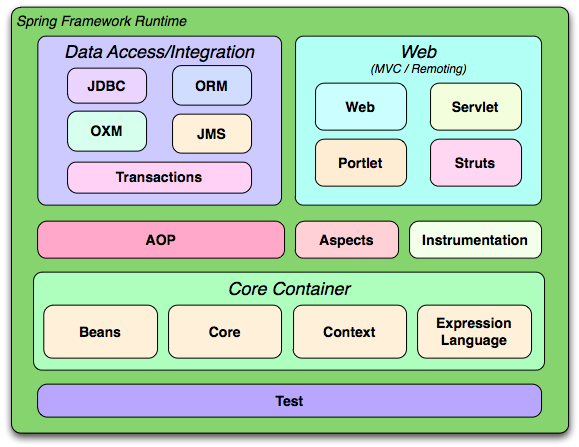

Introducción a Spring
El framework Spring fue desarrollado por Rod Johnson y en 2004 se publicó su primera versión. Spring es un framework extraído de la práctica real de desarrollo, por lo que realiza una gran cantidad de pasos comunes del desarrollo, dejando al desarrollador solo las partes específicas de cada aplicación, lo que mejora enormemente la eficiencia del desarrollo de aplicaciones empresariales.
En resumen, las ventajas de Spring son las siguientes:
- Diseño de baja intrusión, con una contaminación mínima del código.
- Es independiente de varios servidores de aplicaciones; las aplicaciones basadas en Spring pueden cumplir realmente la promesa de Write Once, Run Anywhere.
- El contenedor IoC de Spring reduce la complejidad de reemplazar objetos de negocio y aumenta el desacoplamiento entre componentes.
- El soporte AOP de Spring permite gestionar de forma centralizada tareas comunes como seguridad, transacciones, registros (logs), etc., proporcionando así una mejor reutilización.
- El ORM y DAO de Spring ofrecen una buena integración con frameworks de capa de persistencia de terceros y simplifican el acceso subyacente a la base de datos.
- La alta apertura de Spring no obliga a las aplicaciones a depender completamente de Spring; los desarrolladores pueden elegir libremente usar parte o todo el framework Spring.
El diagrama de estructura de composición del framework Spring es el siguiente:

Mecanismo central de Spring
Gestión de Beans
El programa accede principalmente a los Beans del contenedor a través del contenedor de Spring. ApplicationContext es la interfaz más utilizada del contenedor de Spring; esta interfaz tiene las siguientes dos clases de implementación:
- ClassPathXmlApplicationContext: busca el archivo de configuración en la ruta de carga de clases y crea el contenedor de Spring según dicho archivo.
- FileSystemXmlApplicationContext: busca el archivo de configuración en una ruta relativa o absoluta del sistema de archivos y crea el contenedor de Spring según dicho archivo.
public class BeanTest{
public static void main(String args[]) throws Exception{
ApplicationContext ctx = new ClassPathXmlApplicationContext("beans.xml");
Person p = ctx.getBean("person", Person.class);
p.say();
}
}
Uso de Spring con Eclipse
En herramientas IDE como Eclipse, los usuarios pueden crear sus propias bibliotecas de usuarioUser Library, y luego colocar todos los paquetes Jar de Spring en ellas; por supuesto, también se pueden colocar los paquetes Jar directamente en el directorio del proyecto/WEB-INF/libdirectorio, pero si se utilizaUser Library, al publicar el proyecto, es necesario publicar los archivos Jar referenciados por la biblioteca de usuario junto con la aplicación, es decir, copiar el Jar utilizado por la User Library a/WEB-INF/libdirectorio, esto se debe a que para una aplicación web, Eclipse no copiará los archivos Jar de la biblioteca de usuario al implementar la aplicación web en/WEB-INF/libel directorio, por lo que es necesario copiarlos manualmente.
Inyección de dependencias
El framework Spring tiene dos funciones principales:
- El contenedor de Spring actúa como una superfábrica, encargado de crear y gestionar todos los objetos Java; estos objetos Java se denominan Beans.
- El contenedor de Spring gestiona las dependencias entre los Beans del contenedor; Spring utiliza un método llamado "inyección de dependencias" para gestionar dichas dependencias.
Con la inyección de dependencias, no solo se pueden inyectar valores de propiedades comunes en los Beans, sino también referencias a otros Beans. La inyección de dependencias es una excelente forma de desacoplamiento, ya que permite que los Beans se organicen mediante archivos de configuración en lugar de acoplarse mediante codificación rígida (hardcoding).
Entender la inyección de dependencias
Rod Johnson fue la primera persona en dar gran importancia a la gestión de las relaciones de colaboración entre instancias Java mediante archivos de configuración; dio a este enfoque el nombre de Inversión de Control (Inverse of Control, IoC). Posteriormente, Martine Fowler le dio otro nombre: Inyección de Dependencias (Dependency Injection), por lo que tanto inyección de dependencias como inversión de control tienen exactamente el mismo significado. Cuando un objeto Java (el invocador) necesita llamar a los métodos de otro objeto Java (el objeto dependiente), en el modo tradicional suele haber dos prácticas:
- Práctica original: el invocadoractivamentecrea el objeto dependiente y luego llama al método del objeto dependiente.
- Patrón de fábrica simple: el invocador primero encuentra la fábrica del objeto dependiente y luegoactivamenteobtiene el objeto dependiente a través de la fábrica y, finalmente, llama al método del objeto dependiente.
Observa el término"activamente"que aparece arriba; esto inevitablemente provoca un acoplamiento de codificación rígida entre el invocador y la clase de implementación del objeto dependiente, lo que es muy desfavorable para el mantenimiento y la actualización del proyecto. Tras usar el framework Spring, el invocador no necesitaactivamenteobtener el objeto dependiente; el invocador solo necesitapasivamenteaceptar que el contenedor de Spring asigne valores a las variables miembro del invocador. Así pues, al usar Spring, la forma en que el invocador obtiene el objeto dependiente cambia de adquisición activa a aceptación pasiva; por eso Rod Johnson lo llamó inversión de control.
Además, desde la perspectiva del contenedor de Spring, este se encarga de asignar el objeto dependiente a las variables miembro del invocador, lo que equivale a inyectar en el invocador la instancia de la que depende; por ello Martine Fowler lo llamó inyección de dependencias.
Inyección por setter (setter injection)
La inyección por setter se refiere a que el contenedor IoC inyecta el objeto dependiente a través del método setter de la variable miembro. Este método de inyección es simple e intuitivo, por lo que se usa ampliamente en la inyección de dependencias de Spring.
Inyección por constructor
La forma de establecer dependencias mediante el constructor se denomina inyección por constructor. En términos sencillos, impulsa a Spring a ejecutar en el nivel inferior, mediante reflexión, un constructor con parámetros específicos; al ejecutar el constructor con parámetros, se pueden inicializar las variables miembro con los parámetros del constructor: esta es la esencia de la inyección por constructor.
Comparación de los dos métodos de inyección
La inyección por setter tiene las siguientes ventajas:
- Es más similar a la escritura tradicional de JavaBean, por lo que es más fácil de entender y aceptar para los desarrolladores. Establecer dependencias mediante métodos setter resulta más intuitivo y natural.
- Para dependencias complejas, si se adopta la inyección por constructor, el constructor puede volverse demasiado voluminoso y difícil de leer. Al crear una instancia de Bean, Spring necesita instanciar simultáneamente todas las instancias de las que depende, lo que provoca una disminución del rendimiento. En cambio, usar la inyección por setter puede evitar estos problemas.
- Especialmente cuando ciertas variables miembro son opcionales, un constructor con muchos parámetros resulta más pesado.
Las ventajas de la inyección por constructor son las siguientes:
- La inyección por constructor puede decidir el orden de inyección de las dependencias en el constructor, inyectando primero las dependencias prioritarias.
- Para Beans cuyas dependencias no necesitan cambiar, la inyección por constructor es más útil. Como no hay métodos setter, todas las dependencias se establecen dentro del constructor, sin preocuparse de que el código posterior dañe las dependencias.
- Si las dependencias solo se pueden establecer en el constructor, únicamente el creador del componente puede cambiar sus dependencias. Para el invocador del componente, las dependencias internas son completamente transparentes, lo que se ajusta mejor al principio de alta cohesión.
Nota:
Se recomienda una estrategia de inyección basada principalmente en la inyección por setter y complementada con la inyección por constructor. Para las inyecciones cuyas dependencias no necesitan cambiar, se debe usar preferentemente la inyección por constructor; para otras dependencias, se puede considerar la inyección por setter.
Beans en el contenedor de Spring
Para los desarrolladores, usar el framework Spring consiste principalmente en dos cosas: ① desarrollar Beans; ② configurar Beans. Para el framework Spring, lo que debe hacer es crear instancias de Bean según el archivo de configuración y llamar a los métodos de las instancias de Bean para completar la "inyección de dependencias": esta es la esencia del llamado IoC.
Ámbitos (scopes) de los Beans en el contenedor
Al crear una instancia de Bean a través del contenedor de Spring, no solo se puede completar la instanciación del Bean, sino también especificar un ámbito concreto para el Bean. Spring admite los siguientes cinco ámbitos:
- singleton: modo singleton (instancia única); en todo el contenedor IoC de Spring, los Beans con ámbito singleton solo generarán una única instancia.
- prototype: cada vez que se obtiene un Bean de ámbito prototype mediante el método getBean() del contenedor, se generará una nueva instancia del Bean.
- request: para una solicitud HTTP, el Bean de ámbito request solo generará una instancia. Esto significa que, dentro de la misma solicitud HTTP, cada vez que el programa solicite ese Bean, obtendrá siempre la misma instancia. Este ámbito solo es realmente efectivo cuando se usa Spring en una aplicación web.
- session: este ámbito limita la definición del bean a una sesión HTTP. Solo es válido en el contexto de un Spring ApplicationContext orientado a web.
- global session: cada sesión HTTP global corresponde a una instancia de Bean. En casos típicos, solo es efectivo cuando se utiliza un contexto portlet, y también solo es efectivo en aplicaciones web.
Si no se especifica el ámbito del Bean, Spring utiliza por defecto el ámbito singleton. La creación y destrucción de un Bean de ámbito prototype tiene un costo relativamente alto. En cambio, una vez creada con éxito la instancia de un Bean de ámbito singleton, se puede reutilizar. Por lo tanto, se debe evitar en lo posible configurar los Beans con ámbito prototype.
Inyección de Beans colaboradores mediante ensamblado automático (autowiring)
Spring puede ensamblar automáticamente las dependencias entre Beans, es decir, no es necesario usar ref para especificar explícitamente el Bean dependiente. En su lugar, el contenedor de Spring examina el contenido del archivo de configuración XML y, según ciertas reglas, inyecta el Bean del que se depende en el Bean invocador.
La autovinculación de Spring se puede especificar mediante el<beans/>atributo del elementodefault-autowireEste atributo especificado afecta a todos los Beans del archivo de configuración; también se puede especificar mediante el<bean/>atributo del elementoautowireEste atributo especificado solo afecta a ese Bean.
autowire和default-autowirePuede aceptar los siguientes valores:
no: no se utiliza la autovinculación. Las dependencias del Bean deben definirse mediante el elemento ref. Esta es la configuración predeterminada; en entornos de implementación grandes no se recomienda cambiar esta configuración, ya que configurar explícitamente los colaboradores permite obtener relaciones de dependencia más claras.byName: autovinculación según el nombre del método setter. El contenedor de Spring busca entre todos los Beans del contenedor aquellos cuyo id coincida con el nombre del método setter sin el prefijo set y con la primera letra en minúscula, para realizar la inyección. Si no se encuentra una instancia de Bean que coincida, Spring no realiza ninguna inyección.byType: autovinculación según el tipo del parámetro del método setter. El contenedor de Spring busca entre todos los Beans del contenedor; si hay exactamente un Bean cuyo tipo coincide con el tipo del parámetro del método setter, inyecta automáticamente ese Bean; si encuentra varios Beans de este tipo, lanza una excepción; si no encuentra ningún Bean de este tipo, no ocurre nada y el método setter no se invoca.constructor: similar a byType, con la diferencia de que se utiliza para hacer coincidir automáticamente los parámetros del constructor. Si el contenedor no puede encontrar exactamente un Bean que coincida con el tipo del parámetro del constructor, lanzará una excepción.autodetect: el contenedor de Spring decide por sí mismo si utiliza la estrategia constructor o byType según la estructura interna del Bean. Si encuentra un constructor predeterminado, aplicará la estrategia byType.
Cuando un Bean utiliza tanto la autovinculación de dependencias como la especificación explícita de dependencias mediante ref, la dependencia especificada explícitamente anula a la dependencia autovinculada. Para aplicaciones grandes, no se recomienda el uso de la autovinculación. Aunque la autovinculación puede reducir el trabajo en el archivo de configuración, reduce en gran medida la claridad y transparencia de las relaciones de dependencia. El ensamblaje de dependencias depende de los nombres y tipos de propiedades del archivo fuente, lo que reduce el acoplamiento entre Beans al nivel del código, lo cual no favorece un desacoplamiento de alto nivel.
<!--通过设置可以将Bean排除在自动装配之外--> <bean id="" autowire-candidate="false"/> <!--除此之外，还可以在beans元素中指定，支持模式字符串，如下所有以abc结尾的Bean都被排除在自动装配之外--> <beans default-autowire-candidates="*abc"/>
Tres formas de crear Beans
Crear instancias de Bean mediante el constructor
Usar el constructor para crear instancias de Bean es el caso más común. Si no se utiliza inyección por constructor, en el nivel interno Spring llamará al constructor sin argumentos de la clase Bean para crear la instancia; por lo tanto, se requiere que la clase Bean proporcione un constructor sin argumentos.
Al utilizar el constructor predeterminado para crear la instancia de Bean, Spring realiza la inicialización predeterminada de todas las propiedades de la instancia de Bean, es decir, todos los valores de tipos primitivos se inicializan a 0 o false; todos los valores de tipos de referencia se inicializan a null.
Crear Beans mediante un método de fábrica estático
Al usar un método de fábrica estático para crear una instancia de Bean, también se debe especificar el atributo class, pero en este caso el atributo class no especifica la clase de implementación de la instancia de Bean, sino la clase de fábrica estática. Spring sabe a través de este atributo qué clase de fábrica debe usarse para crear la instancia de Bean.
Además, se debe usar el atributo factory-method para especificar el método de fábrica estático. Spring llamará al método de fábrica estático para que devuelva una instancia de Bean. Una vez obtenida la instancia de Bean especificada, los pasos de procesamiento posteriores de Spring son exactamente iguales a los de crear una instancia de Bean mediante un método común. Si el método de fábrica estático necesita parámetros, se usa el<constructor-arg.../>elemento para especificar los parámetros del método de fábrica estático.
Crear Beans invocando un método de fábrica de instancia
El método de fábrica de instancia difiere del método de fábrica estático solo en una cosa: para llamar al método de fábrica estático solo se necesita la clase de fábrica, mientras que para llamar al método de fábrica de instancia se necesita una instancia de fábrica. Al usar un método de fábrica de instancia, el elemento para configurar la instancia de Bean<bean.../>no necesita el atributo class. Para configurar el método de fábrica de instancia se usa elfactory-beanpara especificar la instancia de fábrica.
Al usar un método de fábrica de instancia para crear un Bean, el<bean.../>elemento debe especificar los siguientes dos atributos:
- factory-bean: el valor de este atributo es el id del Bean de fábrica.
- factory-method: este atributo especifica el método de fábrica de la fábrica de instancia.
Si al llamar al método de fábrica de instancia se deben pasar parámetros, se usa el<constructor-arg.../>elemento para determinar los valores de los parámetros.
Coordinación de Beans con ámbitos no sincronizados
Cuando un Bean de ámbito singleton depende de un Bean de ámbito prototype, se produce un fenómeno de desincronización. La razón es que cuando el contenedor de Spring se inicializa, el contenedor pre-inicializa todos lossingleton Beandel contenedor. Debido a quesingleton Beandepende deprototype Bean, por lo tanto, al inicializarsingleton Beanantes, Spring creará primeroprototypeBean—y luego crearásingleton Bean. A continuación,prototype Beanse inyecta ensingleton Bean。
Hay dos métodos para resolver la desincronización:
- Abandonar la inyección de dependencias: cada vez que un Bean de ámbito singleton necesite un Bean de ámbito prototype, debe solicitar activamente una nueva instancia de Bean al contenedor. Así se garantiza que cada inyección de
prototype Beanla instancia sea siempre la instancia más reciente. - Uso de la inyección de métodos: la inyección de métodos generalmente utiliza la inyección de método lookup. La inyección de método lookup permite que el contenedor de Spring sobrescriba métodos abstractos o concretos de los Beans del contenedor y devuelva el resultado de buscar otro Bean en el contenedor. El Bean buscado suele ser un
non-singleton Bean. Spring logra lo anterior modificando el código binario del cliente mediante el uso de proxies dinámicos de JDK o la librería cglib.
Se recomienda adoptar el segundo método, es decir, la inyección de métodos. Para usar la inyección de método lookup, aproximadamente se necesitan los siguientes dos pasos:
- Definir la clase de implementación del Bean invocador como una clase abstracta y definir un método abstracto para obtener el Bean del que se depende.
- 在
<bean.../>En el elemento agregar el<lookup-method.../>subelemento para que Spring implemente el método abstracto especificado en la clase de implementación del Bean invocador.
Nota:
Spring utilizará el reforzamiento dinámico en tiempo de ejecución para implementar el
<lookup-method.../>método abstracto especificado por el elemento. Si la clase abstracta de destino ha implementado interfaces, Spring utilizará el proxy dinámico de JDK para implementar dicha clase abstracta y sus métodos abstractos; si la clase abstracta de destino no ha implementado interfaces, Spring utilizará cglib para implementar dicha clase abstracta y sus métodos abstractos. La librería cglib ya está integrada en el paquete spring-core-xxx.jar de Spring 4.0.
Dos tipos de posprocesadores
Spring proporciona dos posprocesadores de uso común:
- Posprocesador de Bean: este tipo de posprocesador realiza un posprocesamiento sobre los Beans del contenedor, reforzándolos adicionalmente.
- Posprocesador de contenedor: este tipo de posprocesador realiza un posprocesamiento sobre el contenedor IoC para mejorar las funciones del contenedor.
Posprocesador de Beans
El posprocesador de Bean es un tipo especial de Bean. Este Bean especial no ofrece servicios al exterior e incluso puede no tener atributo id. Su función principal es ejecutar un posprocesamiento sobre otros Beans del contenedor, por ejemplo, generar proxies para los Beans objetivo del contenedor. Este tipo de Bean se denomina posprocesador de Bean. El posprocesador de Bean, después de que la instancia de Bean se haya creado con éxito, realiza un procesamiento de refuerzo adicional sobre la instancia de Bean. El posprocesador de Bean debe implementar la interfazBeanPostProcessory también debe implementar los dos métodos de dicha interfaz.
Object postProcessBeforeInitialization(Object bean, String name) throws BeansException: el primer parámetro de este método es la instancia de Bean que el sistema está a punto de posprocesar; el segundo parámetro es el id de configuración de ese Bean.Object postProcessAfterinitialization(Object bean, String name) throws BeansException: el primer parámetro de este método es la instancia de Bean que el sistema está a punto de posprocesar; el segundo parámetro es el id de configuración de ese Bean.
Una vez que el posprocesador de Bean se registra en el contenedor, se activa automáticamente y trabaja automáticamente cuando se crea cada Bean en el contenedor. El momento de la devolución de llamada de los dos métodos del posprocesador de Bean se muestra en la siguiente figura:

Tenga en cuenta que si se usaBeanFactorycomo contenedor de Spring, entonces se debe registrar manualmente el posprocesador de Bean. El programa debe obtener la instancia del posprocesador de Bean y luego registrarla manualmente.
BeanPostProcessor bp = (BeanPostProcessor)beanFactory.getBean("bp");
beanFactory.addBeanPostProcessor(bp);
Person p = (Person)beanFactory.getBean("person");
Posprocesador de contenedor
El posprocesador de Bean se encarga de procesar todas las instancias de Bean del contenedor, mientras que el posprocesador de contenedor se encarga de procesar el propio contenedor. El posprocesador de contenedor debe implementarBeanFactoryPostProcessorInterfaz, e implementar un método de dicha interfazpostProcessBeanFactory(ConfigurableListableBeanFactory beanFactory)El cuerpo del método que implementa este método consiste en procesar el contenedor de Spring. Este procesamiento puede realizar una extensión personalizada del contenedor de Spring, o por supuesto, puede no realizar ningún procesamiento sobre el contenedor de Spring.
Similar aBeanPostProcessor，ApplicationContextPuede detectar automáticamente el postprocesador de contenedor en el contenedor y registrarlo automáticamente. Pero si se utilizaBeanFactorycomo contenedor de Spring, entonces se debe llamar manualmente a dicho postprocesador de contenedor para procesar elBeanFactorycontenedor.
Soporte de Spring para "configuración cero"
Búsqueda de clases Bean
Spring proporciona las siguientes anotaciones para marcar los Beans de Spring:
@Component: Marca una clase Bean ordinaria de Spring@Controller: Marca una clase de componente controlador@Service: Marca una clase de componente de lógica de negocio@Repository: Marca una clase de componente DAO
Realice la siguiente configuración en el archivo de configuración de Spring para especificar el paquete de escaneo automático:
<context:component-scan base-package="edu.shu.spring.domain"/>
Configuración de dependencias con @Resource
@ResourceUbicado en el paquetejavax.annotation, es una especificación de JavaEE proveniente deAnnotation, Spring tomó prestada directamente dichaAnnotation, y mediante el uso de dichaAnnotationse especifica el Bean colaborador para el Bean objetivo. Usar el atributo ref del elemento@Resource与<property.../>tiene el mismo efecto.
@ResourceNo solo puede modificar métodos setter, sino que también puede modificar directamente variables de instancia. Si se usa@Resourcepara modificar variables de instancia, será aún más simple, ya que Spring utilizará directamente la inyección de campos de la especificación JavaEE, e incluso se pueden omitir los métodos setter.
Personalización del comportamiento del ciclo de vida con @PostConstruct y @PreDestroy
@PostConstruct和@PreDestroyTambién se encuentran en el paquete javax.annotation y son dos anotaciones de la especificación JavaEE. Spring las tomó prestadas directamente para personalizar el comportamiento del ciclo de vida de los Beans en el contenedor de Spring. Ambas se utilizan para modificar métodos y no requieren ningún atributo. El método modificado por la primera es el método de inicialización del Bean, mientras que el método modificado por la segunda es el método que se ejecuta antes de la destrucción del Bean.
Ensamblado automático y ensamblado preciso mejorados en Spring 4.0
Spring proporciona la anotación@Autowiredpara especificar el ensamblaje automático.@AutowiredPuede modificar métodos setter, métodos ordinarios, variables de instancia y constructores, etc. Cuando se usa@Autowiredpara marcar métodos setter, se adopta por defecto la estrategia de ensamblaje automático byType. Con esta estrategia, suele haber múltiples instancias de Bean candidatas que coinciden con el tipo de ensamblaje automático, lo que puede causar excepciones. Para lograr un ensamblaje automático preciso, Spring proporciona la anotación@Qualifier, que permite realizar el ensamblaje automático según el id del Bean mediante el uso de@Qualifier.
AOP de Spring
Por qué se necesita AOP
AOP (Aspect Orient Programming), también conocido como programación orientada a aspectos, como complemento de la programación orientada a objetos, se ha convertido en una forma de programación bastante madura. En realidad, el tiempo transcurrido desde la aparición de AOP no es demasiado largo. AOP y OOP se complementan mutuamente; la programación orientada a aspectos descompone el proceso de ejecución del programa en diversos aspectos.
AOP está especialmente diseñado para manejar los problemas de preocupaciones transversales distribuidos en varios módulos (diferentes métodos) del sistema. En las aplicaciones JavaEE, a menudo se utiliza AOP para manejar servicios a nivel de sistema con propiedades transversales, como gestión de transacciones, verificación de seguridad, caché, gestión de grupos de objetos, etc. AOP se ha convertido en una solución muy común.
Implementación de AOP con AspectJ
AspectJ es un framework de AOP basado en el lenguaje Java que proporciona potentes funciones de AOP. Muchos otros frameworks de AOP han tomado prestadas o adoptado algunas de sus ideas. Principalmente incluye dos partes: una parte define cómo expresar y definir las reglas gramaticales en la programación AOP; mediante este conjunto de reglas gramaticales, se pueden resolver convenientemente los problemas de preocupaciones transversales existentes en el lenguaje Java con AOP; la otra parte es la parte de herramientas, que incluye herramientas de compilación, depuración, etc.
La implementación de AOP se puede dividir en dos categorías:
- Implementación de AOP estático: el framework de AOP modifica el programa en la fase de compilación, es decir, implementa el refuerzo de la clase objetivo y genera clases proxy de AOP estáticas, representado por AspectJ.
- Implementación de AOP dinámico: el framework de AOP genera dinámicamente proxies de AOP en la fase de ejecución para lograr el refuerzo del objeto objetivo, representado por Spring AOP.
En general, la implementación de AOP estático tiene un mejor rendimiento, pero requiere un compilador especial. La implementación de AOP dinámico es una implementación puramente en Java, por lo que no requiere un compilador especial, pero su rendimiento suele ser ligeramente inferior.
Conceptos básicos de AOP
Algunos términos sobre la programación orientada a aspectos:
- Aspecto (Aspect): el aspecto se utiliza para organizar múltiples Advice, y los Advice se definen dentro del aspecto.
- Punto de unión (Joinpoint): un punto específico durante la ejecución del programa, como la invocación de un método o el lanzamiento de una excepción. En Spring AOP, los puntos de unión son siempre invocaciones de métodos.
- Procesamiento de refuerzo (Advice): el procesamiento de refuerzo que el framework de AOP ejecuta en puntos de corte específicos. El procesamiento tiene tipos como "around", "before" y "after".
- Punto de corte (Pointcut): un punto de unión donde se puede insertar el procesamiento de refuerzo. En resumen, cuando un punto de unión cumple con los requisitos especificados, se le agregará el procesamiento de refuerzo, y ese punto de unión se convertirá en un punto de corte.
Soporte de AOP de Spring
Los proxies de AOP en Spring son generados y gestionados por el contenedor IoC de Spring, y sus relaciones de dependencia también son gestionadas por el contenedor IoC.
Para utilizar el soporte de@AspectJen la aplicación, Spring necesita agregar tres bibliotecas:
aspectjweaver.jaraspectjrt.jaraopalliance.jar
Y realizar la siguiente configuración en el archivo de configuración de Spring:
<!--启动@AspectJ支持-->
<aop:aspectj-autoproxy/>
<!--指定自动搜索Bean组件、自动搜索切面类-->
<context:component-scan base-package="edu.shu.sprint.service">
<context:include-filter type="annotation" expression="org.aspectj.lang.annotation.Aspect"/>
</context:component-scan>
Fuente: http://codepub.cn/2015/06/21/Basic-knowledge-summary-of-Spring/
Jaja
che***26.com
@Resource y @Autowired, la diferencia entre ambos: @Resource está en el paquete javax.annotation.Resource y es compatible con JavaEE; @Autowired está en el paquete org.springframework.beans.factory.annotation.Autowired y es proporcionado por Spring. Esto hace que la extensibilidad de @Resource sea superior a la de @Autowired, porque al exportar un proyecto, si se usa la anotación @Resource, puede ser proporcionada por el entorno Java, mientras que si se usa la anotación @Autowired, es necesario importar adicionalmente el paquete de Spring.
Jaja
che***26.com